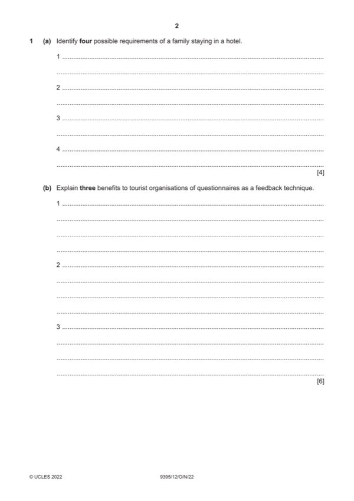

Question 1

Original paper page 2
Part 1(a) — solution
- Wi-fi access
- Airport transfers or to transport hubs
- Set aside area for children to play
- Babysitting services
- Children’s menus
- Family rooms
- Swimming pools and / or activities for children
Mark points
- Wi-fi access
- Airport transfers or to transport hubs
- Set aside area for children to play
- Babysitting services
- Children’s menus
- Family rooms
- Swimming pools and / or activities for children
Part 1(b) — solution
- Cheap to use (1) as they can be e-mailed to customers – no printing or
- Easy to administer (1) if e-mailing then the recipients can be easily and
- They can be designed to focus on one aspect (1) this means the
- Large numbers (1) can be done which makes the feedback more
Mark points
- Cheap to use (1) as they can be e-mailed to customers – no printing or
- Easy to administer (1) if e-mailing then the recipients can be easily and
- They can be designed to focus on one aspect (1) this means the
- Large numbers (1) can be done which makes the feedback more
Part 1(c) — solution
- Rewards (1) can be given as an incentive (1) for delivering a smooth
- Training staff (1) makes sure everyone knows what to do (1) and they
- Monitoring staff (1) allows problem areas to be identified (1) and then
Mark points
- Rewards (1) can be given as an incentive (1) for delivering a smooth
- Training staff (1) makes sure everyone knows what to do (1) and they
- Monitoring staff (1) allows problem areas to be identified (1) and then
Part 1(d) — solution
Assess the importance of virtual tours to a hotel. 9
Indicative content:
Virtual tours can be easily tailored to specific groups which is beneficial to
the hotel. They can then access groups who they feel will want to use their
facilities.
It allows for creativity.
It is cheaper to use as it can be done in-house.
It will be on a website for example which would be available to potential
customers 24/7.
Can be used on social media platforms
Virtual tours can allow customers to walk their way around the hotel and to
get a closer view of the facilities and rooms so that they are aware of what
there will be available.
Other relevant information should also be credited.
Mark according to the levels of response criteria below.
Level 3 (7–9 marks)
Candidates will show a clear understanding of the question and include
detailed identification and assessment of the importance of virtual tours to a
hotel. Candidates effectively assess a range of ways and clearly attempt to
assess the significance of each. Analytical language will be used. There is
sound and frequent evidence of thorough, detailed and accurate knowledge
and understanding of concepts and principles using appropriate
terminology.
Level 2 (4–6 marks)
Candidates will show an understanding of the question and include
explanations of the value of virtual tours to a hotel. There may be some
attempt to assess and some analytical language may be used but there will
be little in the form of assessment. The answer is relevant and accurate and
shows reasonable knowledge and understanding of concepts and principles
with some use of appropriate terminology.
Level 1 (1–3 marks)
Candidates identify/describe some ways that virtual tours may be of value to
a hotel. Information may be a list of points but explanations are incomplete
and arguments partial (if present). The explanations lack coherent
organisation and there is no attempt to assess. The answer is basic and
shows limited knowledge and understanding of concepts and principles with
limited use of appropriate terminology.
Level 0 (0 marks)
No content worthy of reward.
2022 Page 6 of 13
9395/12 Cambridge IGCSE – Mark Scheme October/November
PUBLISHED 2022
Mark points
- Include the ideas shown in the solution above.